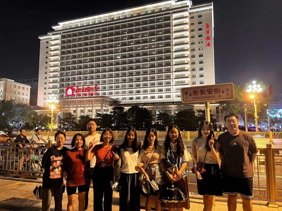
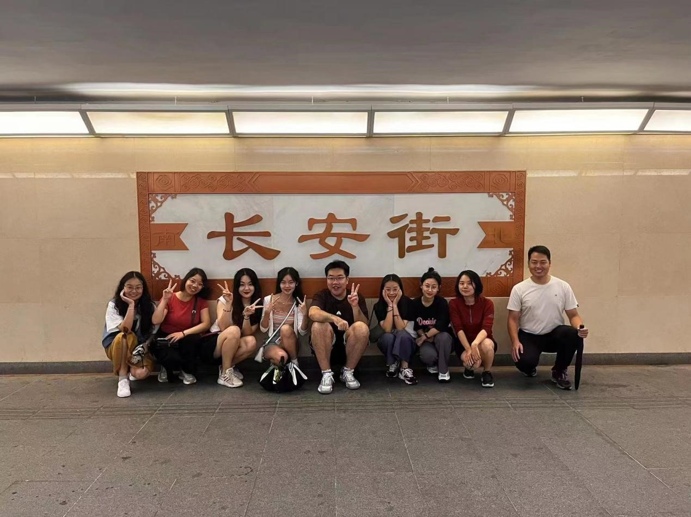

抓住夏天的小尾巴，来一场City Ride，与Tao-Lab的小伙伴 们横穿美丽繁华的长安街，是这夏日最浪漫的事情了吧！
夜晚的京城褪去了白日里作为政治中心的冷硬刚肃，变得柔情似水，美得纷繁多样， 让人不禁沉醉其中。本次骑行路线：从王府井地铁站出发， 沿着长安街经过了国家博物馆、天安门广场、人民大会堂、毛主席纪念堂， 见证了夜晚长安街的繁华，在工作之余与伙伴们并肩骑行，畅谈于漫漫长夜， 似乎一些压力与烦恼都消散了。 
白天的长安街挤满了戴着红帽子的旅行团和各种游客，夜晚的长安街同样拥挤， 只不过变成了下班后出来骑车放风的打工人。不管是尊贵的共享单车包月用户， 还是一个车轮子就五位数的中产贵族，在骑行这件事上，快乐是一样的。 不论是City Walk还是City Ride，最重要的是走出去感受身边不一样的风景， 在和小伙伴的交流中发现那个不一样的自己。
解放自我、释放压力、强身健体、凝聚团魂！是Tao-Lao课题组本地团建的最终目的！ 如果你也感兴趣，欢迎加入我们，不仅可以一起工作进步也可以一起快乐玩耍呀~
